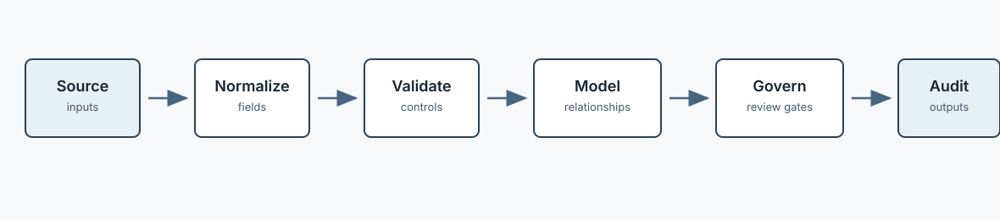
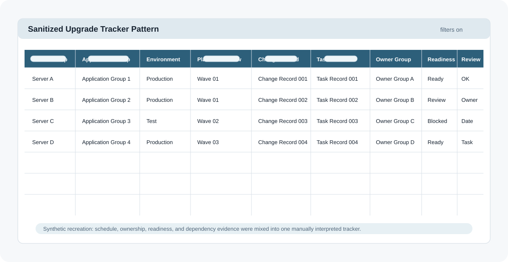
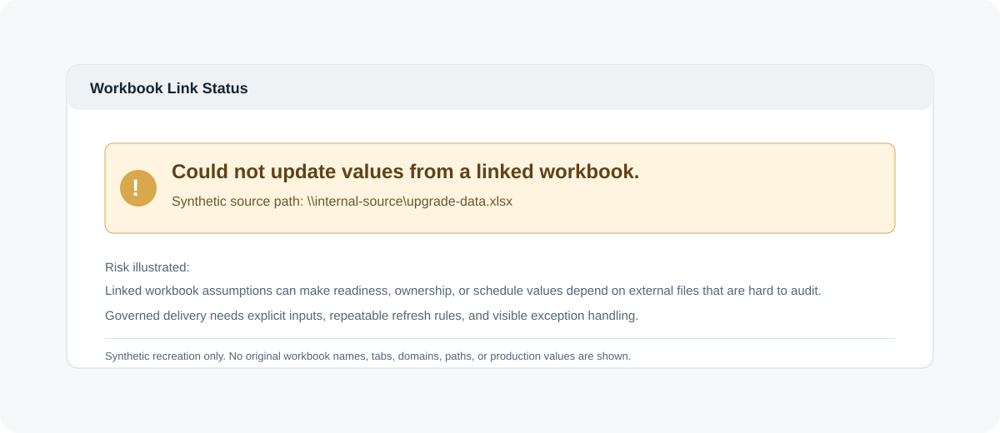
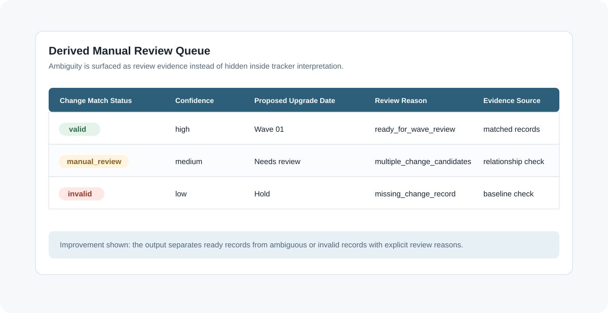
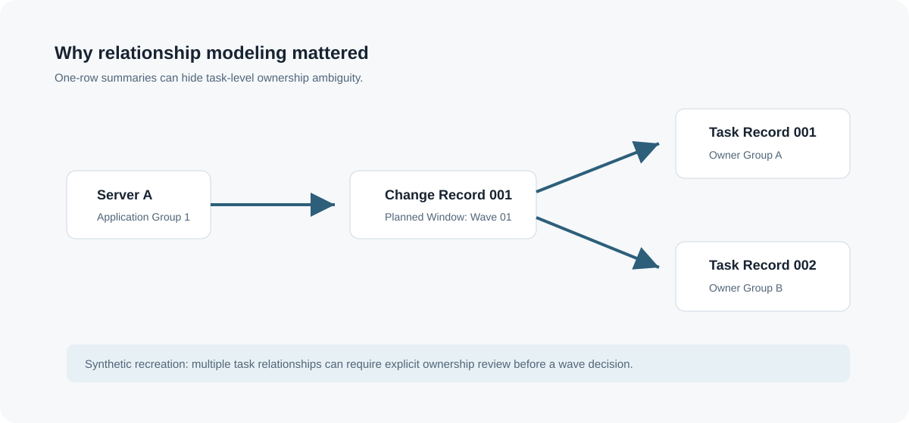

Technical Program Management Case Study
Turning hidden spreadsheet assumptions into a validated, repeatable workflow for enterprise RHEL upgrade planning.
Enterprise upgrade planning had outgrown a formula-heavy tracker. The operational risk lived in assumptions about ownership, readiness, schedule windows, implementation tasks, and reporting.
The issue was not Excel itself. The issue was that the workflow needed explicit controls, repeatable runs, and clearer review gates.
The solution pattern makes each step visible: normalize inputs, validate assumptions, model relationships, apply controls, and route exceptions to human review.

These recreated visuals show the operating patterns behind the work without exposing internal systems, workbook tabs, domains, application names, or production records.
Visuals are sanitized recreations based on enterprise workflow patterns. No production data is shown.




Required fields and uniqueness checks prevent bad baselines from silently moving forward.
Inventory records are explicitly connected to change and task records before wave review.
Exceptions are not hidden. They are routed to a smaller, clearer review queue.
Derek clarified the operating problem, translated workflow risk into concrete controls, guided AI-assisted implementation with Claude Code, reviewed outputs, tested behavior, and shaped delivery decisions.
The sanitized demo demonstrates deterministic classification, explicit review reasons, and safe separation of ready records from exception records.
No production upgrade completion, adoption, or time-savings claims are made here without separate measurement.
Run ./scripts/run_demo.sh to generate safe example outputs from synthetic data.
Run ./scripts/verify_public_export.sh before publishing to scan for sensitive terms, local paths, real emails, internal URLs, and risky identifiers.
AI accelerated implementation, but Derek supplied the requirements, operating context, constraints, review, and acceptance decisions. The portfolio value is judgment plus execution.
This case study is designed for senior TPM, delivery leadership, and enterprise technology program roles.